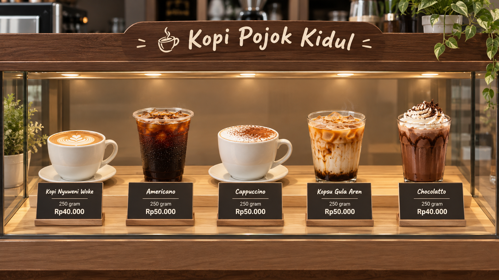

Produk Kopi Pojok Kidul
Pilih produk sesuai kebutuhan anda:)

Kategori Seduh Rumahan
| Produk | Ukuran | Harga |
|---|---|---|
| Kopi Nyuweni Woke | 250 gram | Rp40.000 |
| Cappuccino | 250 gram | Rp50.000 |
| Kopsu Gula Aren | 250 gram | Rp50.000 |
| Chocolatto | 250 gram | Rp40.000 |
Kategori Seduh di Lapak
| Produk | Harga |
|---|---|
| Kopi Nyuweni Woke | Rp12.000 |
| Americano | Rp12.000 |
| Cappuccino | Rp13.000 |
| Kopsu Gula Aren | Rp13.000 |
| Kopsu Avocado | Rp13.000 |
| Red Velvet | Rp14.000 |
| Chocolatto | Rp12.000 |
| Matcha | Rp13.000 |
| Avocado Milk | Rp13.000 |
| Mango Milk | Rp13.000 |